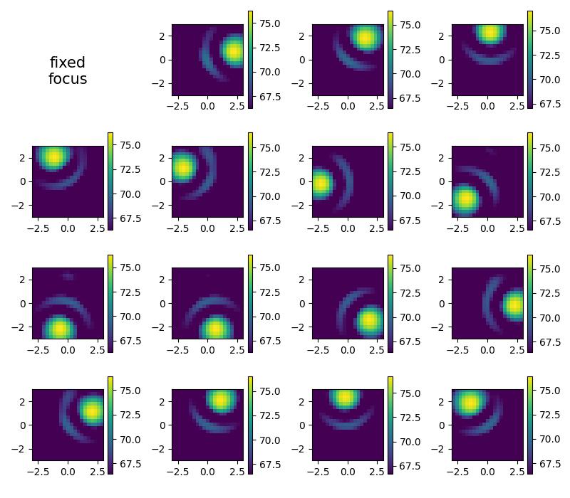
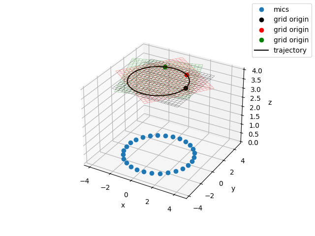
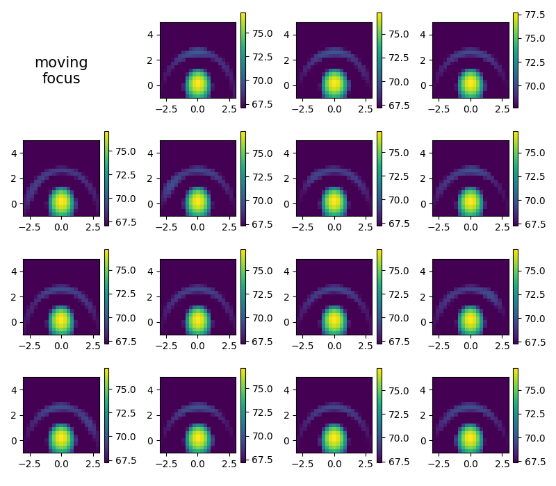
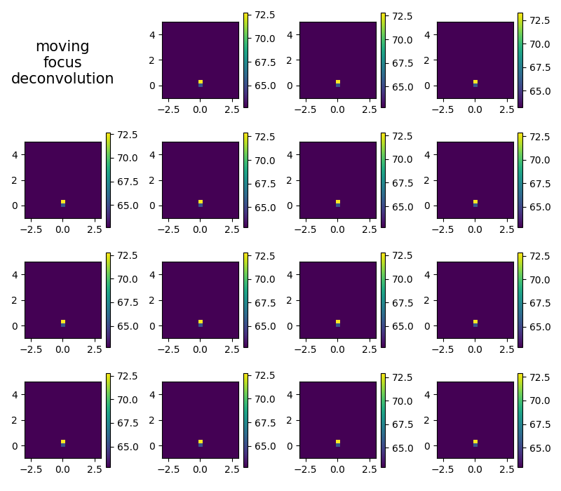
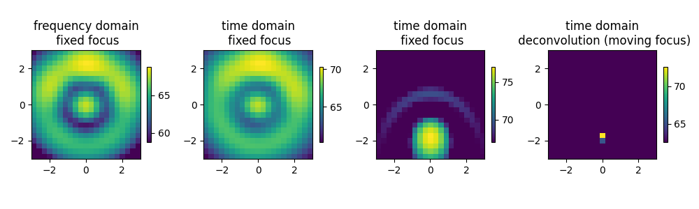

Note
Go to the end to download the full example code.
Rotating point source¶
Demonstrates the use of acoular for a point source moving on a circle trajectory. Uses synthesized data.
Four different methods are compared:
fixed focus time domain beamforming
fixed focus frequency domain beamforming
moving focus time domain beamforming
moving focus time domain deconvolution
import acoular as ac
import matplotlib.pyplot as plt
import numpy as np
First, we make some important definitions:
the frequency of interest (114 Hz),
1/3 octave band for later analysis,
the sampling frequency (3072 Hz),
the array radius (3.0),
the radius of the source trajectory (2.5),
the distance of the source trajectory from the array (4),
the revolutions per second (15/60),
the total number of revolutions (1.5).
Construct the trajectory for the source. The source moves on a circle trajectory in anti-clockwise direction.
tr = ac.Trajectory()
tr1 = ac.Trajectory()
tmax = U / rps
delta_t = 1.0 / rps / 16.0 # 16 steps per revolution
for t in np.arange(0, tmax * 1.001, delta_t):
i = t * rps * 2 * np.pi # angle
# define points for trajectory spline
tr.points[t] = (R * np.cos(i), R * np.sin(i), Z) # anti-clockwise rotation
tr1.points[t] = (R * np.cos(i), R * np.sin(i), Z) # anti-clockwise rotation
Define a circular microphone array with 28 microphones.
Define the different source signals
num_samples = int(sfreq * tmax)
n1 = ac.WNoiseGenerator(sample_freq=sfreq, num_samples=num_samples)
s1 = ac.SineGenerator(sample_freq=sfreq, num_samples=num_samples, freq=freq)
Define the moving source and one fixed source and mix their signals.
The simulation output is cached by the Cache class.
Optionally, save the signal of channel 0 and 14 to a wave file.
# ww = WriteWAV(source = t)
# ww.channels = [0,14]
# ww.save()
Define the evaluation grid and the steering vector.
g = ac.RectGrid(x_min=-3.0, x_max=+3.0, y_min=-3.0, y_max=+3.0, z=Z, increment=0.3)
st = ac.SteeringVector(grid=g, mics=m)
Plot the scene
fig, ax = plt.subplots(subplot_kw={'projection': '3d'}, num=1)
ax.plot(m.pos[0], m.pos[1], m.pos[2], 'o', label='mics')
gpos = g.pos.reshape((3, g.nxsteps, g.nysteps))
ax.plot_wireframe(gpos[0], gpos[1], gpos[2], color='k', lw=0.2, label='grid')
txyz = np.array(list(tr.traj(0, 4.1, 0.1)))
ax.plot(*txyz.T, 'k', label='trajectory')
ax.set(xlabel='x', ylabel='y', zlabel='z')
fig.legend()

<matplotlib.legend.Legend object at 0x7fe73131cb90>
Fixed focus time domain beamforming¶
Plot single frames. Note that the look direction is _towards_ the array. If you want a look direction _from_ the array (like a photo camera would do), the image needs to be mirrored.
plt.figure(2, (8, 7))
i = 1
map2 = np.zeros(g.shape) # accumulator for average
for res in cacht.result(1):
res0 = res[0].reshape(g.shape)
map2 += res0 # average
i += 1
plt.subplot(4, 4, i)
mx = ac.L_p(res0.max())
plt.imshow(
ac.L_p(np.transpose(res0)), vmax=mx, vmin=mx - 10, interpolation='nearest', extent=g.extend(), origin='lower'
)
plt.colorbar()
map2 /= i
plt.subplot(4, 4, 1)
plt.text(0.4, 0.25, 'fixed\nfocus', fontsize=15, ha='center')
plt.axis('off')
plt.tight_layout()
[('void_cache.h5', 1)]
[('void_cache.h5', 2)]
Moving focus time domain beamforming¶
New grid needed, the trajectory starts at origin and is oriented towards +x thus, with the circular movement assumed, the center of rotation is at (0,2.5)
g1 = ac.RectGrid(
x_min=-3.0,
x_max=+3.0,
y_min=-1.0,
y_max=+5.0,
z=0,
increment=0.3,
) # grid point of origin is at trajectory (thus z=0)
st1 = ac.SteeringVector(grid=g1, mics=m)
# beamforming with trajectory (rvec axis perpendicular to trajectory)
bts = ac.BeamformerTimeSqTraj(source=fi, steer=st1, trajectory=tr, rvec=np.array((0, 0, 1.0)))
avgts = ac.Average(source=bts, num_per_average=int(sfreq * tmax / 16)) # 16 single images
cachts = ac.Cache(source=avgts) # cache to prevent recalculation
Plot the scene with moving grid. We show three example positions of the grid when it get moved and swiveled along the trajectory.
fig, ax = plt.subplots(subplot_kw={'projection': '3d'}, num=3)
ax.plot(m.pos[0], m.pos[1], m.pos[2], 'o', label='mics')
# translation and direction of trajectory
for loc, dx, co in zip(tr.traj(0, 1.3, 0.6), tr.traj(0, 1.3, 0.6, der=1), 'krg'):
dy = np.cross(bts.rvec, dx) # new y-axis
dz = np.cross(dx, dy) # new z-axis
RM = np.array((dx, dy, dz)).T # rotation matrix
RM /= np.sqrt((RM * RM).sum(0)) # column normalized
tpos = np.dot(RM, g1.pos) + np.array(loc)[:, np.newaxis] # rotation+translation
gpos = tpos.reshape((3, g.nxsteps, g.nysteps))
ax.plot_wireframe(gpos[0], gpos[1], gpos[2], color=co, lw=0.2)
ax.plot(loc[0], loc[1], loc[2], 'o', color=co, label='grid origin')
txyz = np.array(list(tr.traj(0, 4.1, 0.1)))
ax.plot(*txyz.T, 'k', label='trajectory')
ax.set(xlabel='x', ylabel='y', zlabel='z')
fig.legend()

<matplotlib.legend.Legend object at 0x7fe730e8d090>
Plot single frames
plt.figure(4, (8, 7))
i = 1
map3 = np.zeros(g1.shape) # accumulator for average
for res in cachts.result(1):
res0 = res[0].reshape(g1.shape)
map3 += res0 # average
i += 1
plt.subplot(4, 4, i)
mx = ac.L_p(res0.max())
plt.imshow(
ac.L_p(np.transpose(res0)), vmax=mx, vmin=mx - 10, interpolation='nearest', extent=g1.extend(), origin='lower'
)
plt.colorbar()
map3 /= i
plt.subplot(4, 4, 1)
plt.text(0.4, 0.25, 'moving\nfocus', fontsize=15, ha='center')
plt.axis('off')
plt.tight_layout()

[('void_cache.h5', 3)]
Moving focus time domain deconvolution¶
beamforming with trajectory (rvec axis perpendicular to trajectory)
Plot single frames
plt.figure(5, (8, 7))
i = 1
map4 = np.zeros(g1.shape) # accumulator for average
for res in cachct.result(1):
res0 = res[0].reshape(g1.shape)
map4 += res0 # average
i += 1
plt.subplot(4, 4, i)
mx = ac.L_p(res0.max())
plt.imshow(
ac.L_p(np.transpose(res0)), vmax=mx, vmin=mx - 10, interpolation='nearest', extent=g1.extend(), origin='lower'
)
plt.colorbar()
map4 /= i
plt.subplot(4, 4, 1)
plt.text(0.4, 0.25, 'moving\nfocus\ndeconvolution', fontsize=15, ha='center')
plt.axis('off')
plt.tight_layout()

[('void_cache.h5', 4)]
Fixed focus frequency domain beamforming¶
[('void_cache.h5', 5)]
[('void_cache.h5', 6)]
Compare all four methods
plt.figure(6, (10, 3))
for i, map, tit in zip(
(1, 2, 3, 4),
(map1, map2, map3, map4),
(
'frequency domain\n fixed focus',
'time domain\n fixed focus',
'time domain\n fixed focus',
'time domain\n deconvolution (moving focus)',
),
):
plt.subplot(1, 4, i)
mx = ac.L_p(map.max())
plt.imshow(
ac.L_p(np.transpose(map)), vmax=mx, vmin=mx - 10, interpolation='nearest', extent=g.extend(), origin='lower'
)
plt.colorbar(shrink=0.4)
plt.title(tit)
plt.tight_layout()
plt.show()

Total running time of the script: (0 minutes 13.508 seconds)